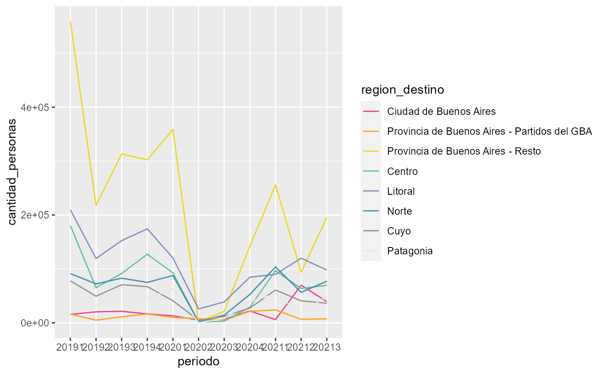

scale_color_dnmye.RdConstructor de escala de colores de contorno (color) para la dnmye
scale_color_dnmye(palette = "c10_todos", discrete = TRUE, reverse = FALSE, ...)
| palette | Nombre de la paleta de colores en dnmye_paleta |
|---|---|
| discrete | TRUE indica que la variable es discreta |
| reverse | TRUE indica que la peleta debe ser invertida |
| ... | Argumentos adicionales para definir en discrete_scale() o scale_color_gradientn(), respectivamente, cuando discrete es TRUE o FALSE |
datafile <- system.file("toy_evyth.rds", package = "comunicacion") toy_evyth <- readRDS(datafile) toy_evyth %>% dplyr::mutate(periodo = as.factor(paste0(anio, trimestre)), region_destino = factor(region_destino, labels = c("Ciudad de Buenos Aires", "Provincia de Buenos Aires - Partidos del GBA", "Provincia de Buenos Aires - Resto", "Centro", "Litoral", "Norte", "Cuyo", "Patagonia"))) %>% dplyr::group_by(periodo, region_destino) %>% dplyr::summarise(cantidad_personas = sum(pondera)) %>% ggplot2::ggplot(ggplot2::aes(x = periodo, y = cantidad_personas, color = region_destino, group = region_destino)) + ggplot2::geom_line() + scale_color_dnmye()#>